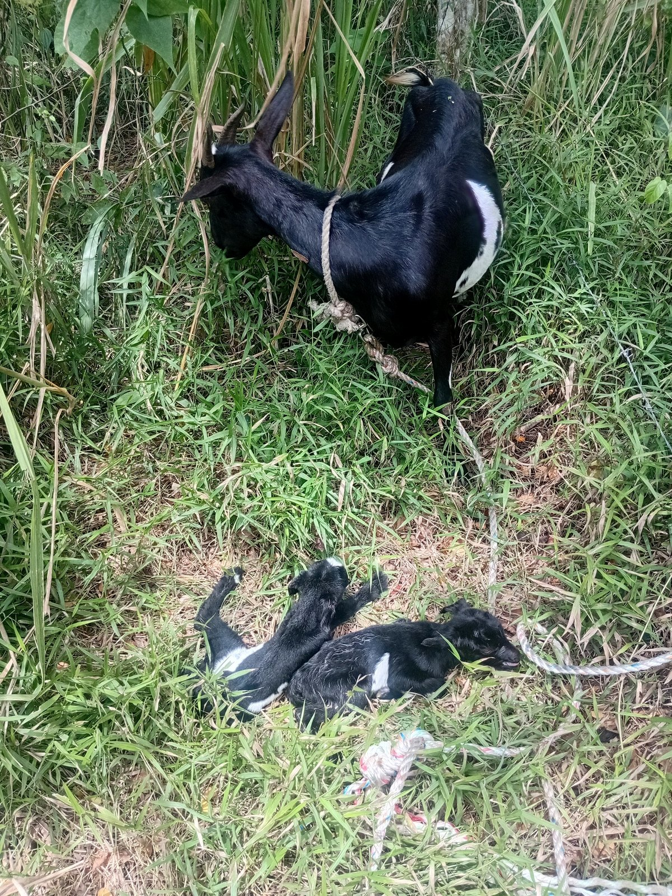
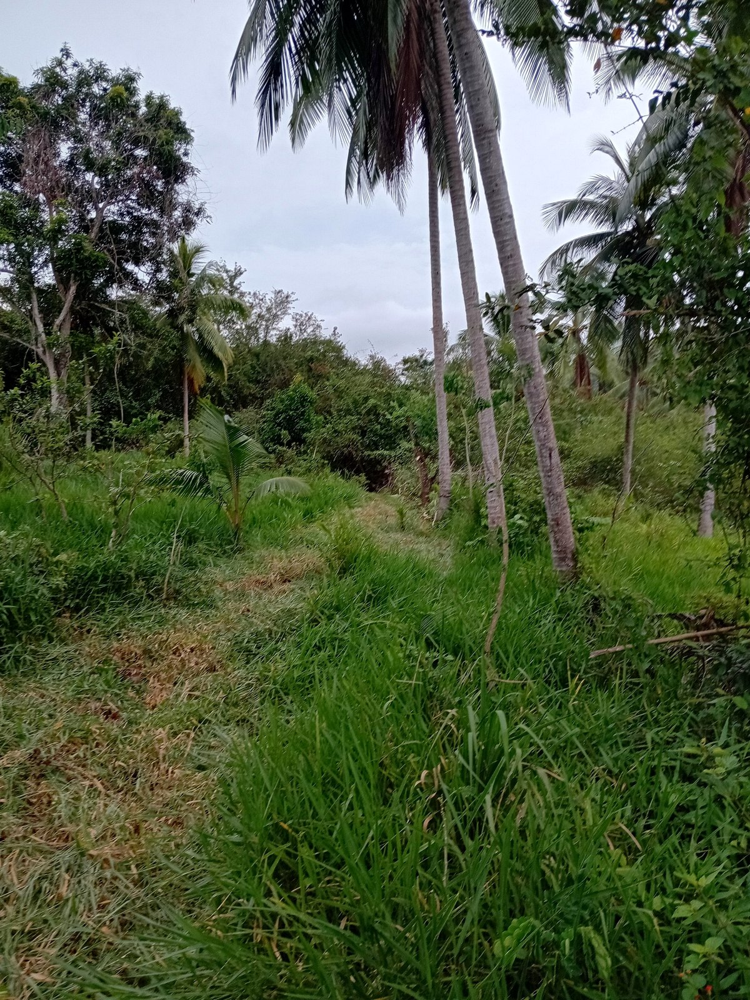
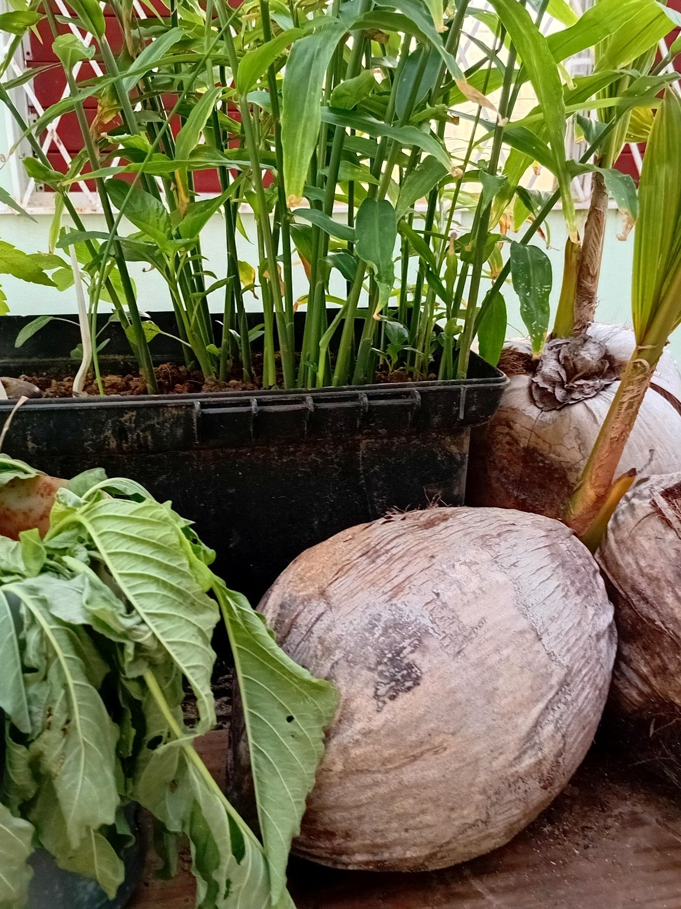
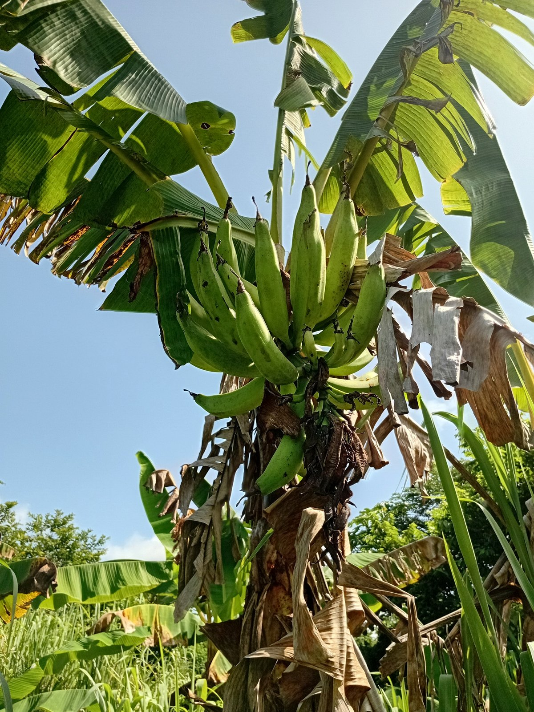
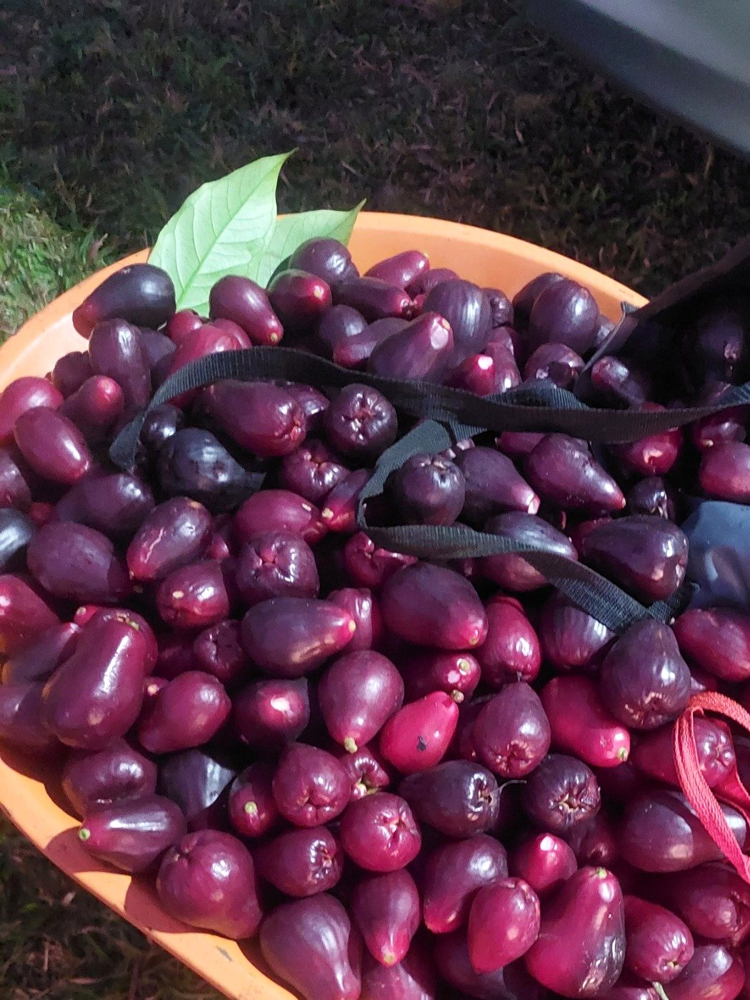
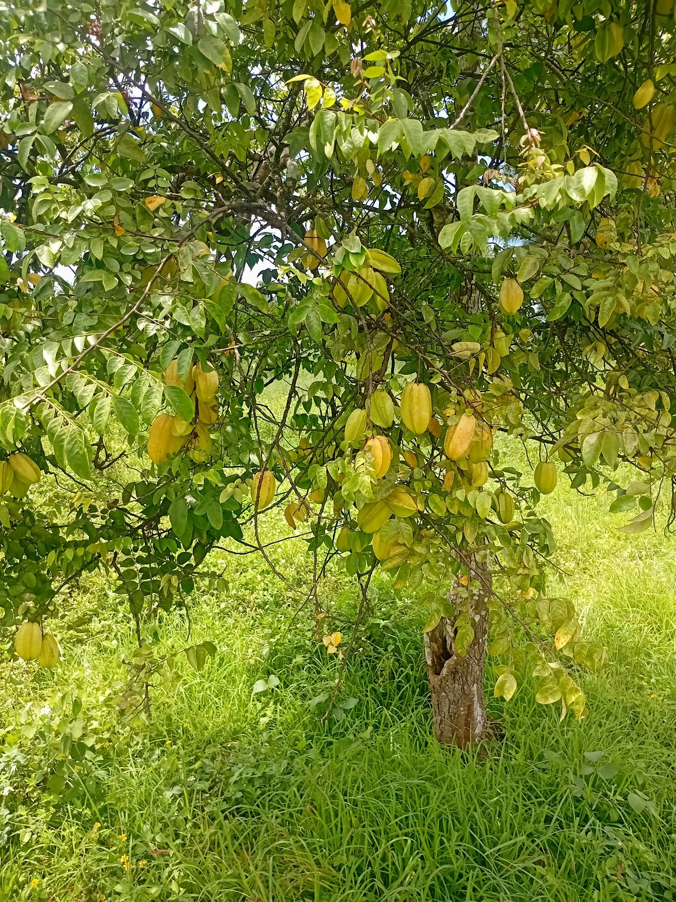
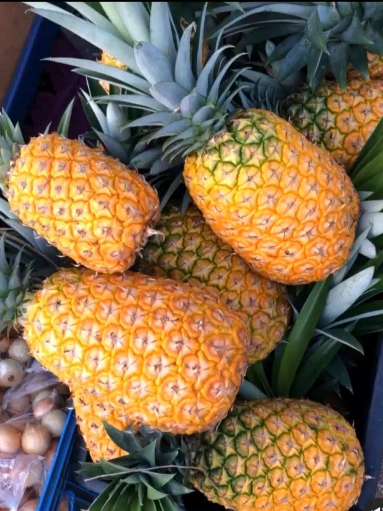

Operations & Resilience
Farm Operations & Resilience
Keeping livestock, land, maintenance and basic infrastructure functioning when resources and conditions change.
Operating context
Livestock, land, propagation, crops and harvest all sit inside the same operating system.







The operating problem
Daily systems still have to work when conditions are imperfect.
Farm work combines recurring care with unpredictable maintenance, weather, equipment, water, fencing, vegetation and property needs. The challenge is less about optimizing one isolated task and more about keeping the whole operating environment usable enough for the next day.
My role
Coordinated practical work across animals, land and infrastructure.
- Daily livestock care and movement.
- Land management, pruning, weed control and growing-area upkeep.
- Basic maintenance, repair and troubleshooting.
- Property operations and security-related practical work.
- Improving simple infrastructure when existing systems are inadequate.
- Adapting priorities to weather, resource constraints and changing conditions.
Working pattern
Protect the essentials first, then improve capability.
The same systems principle appears here as in my digital and workshop work: identify the essential function, stabilize it, reduce avoidable failure points, and then improve the surrounding system when time and resources allow.
That can mean restoring water access, repairing an enclosure, adjusting land use, improving a growing area or creating a more maintainable physical setup instead of treating each issue as an unrelated emergency.